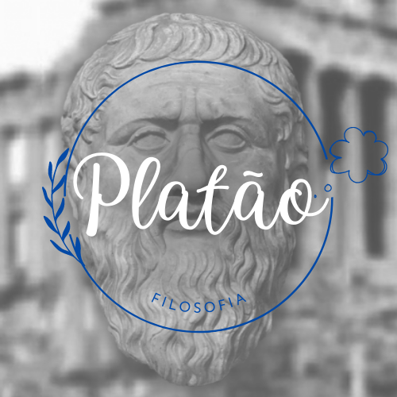

<!DOCTYPE html>
<html lang="en"></html>
<head>
      <link rel="shortcut icon" href="favicon-32x32" type="image/x-icon" />
      <meta charset="UTF-8">
      <meta http-equiv="X-UA-Compatible" content="IE=edge" />
      <meta name="viewport" content="width=device-width, initial-scale=1.0">
      <title>Obras de Platão</title>
      <link rel="stylesheet"  href="estilo.css">
</head>
<body>
   <header>
         <div>
            
         </div>
         <nav>
            <ul>
               <li><a href="karol.html">Biografia</a></li>
               <li><a href="nicoly.html">Frases</a></li>
               <li><a href="alice.html">O Mito da Caverna</a></li>
            </ul>
         </nav>
      </header>
         <main>
         <h1 class="titulo_main">Obras de Platão</h1>
         <div>
             
         <p>
            A maior parte dos escritos de Platão é composta pelos diálogos socráticos, em que o seu mestre, Sócrates, é a figura central. Em geral, os diálogos falam sobre um determinado tema, mas sem grandes delimitações ou especificações, podendo falar sobre outros assuntos.    
         </p>
         <p>
            Temos conhecimento, hoje, de 35 diálogos deixados por Platão. Abaixo, estão listados os principais textos e suas características gerais:
         </p>
         <p>
            <div class="tit1">
                ★ Apologia de Sócrates:
            </div>
         </p>
         <p>
            Escrito após a morte de Sócrates, o texto narra os últimos momentos do mestre de Platão, quando foi acusado de corrupção da juventude de Atenas, julgado e condenado à morte. 
         </p>
         </p>    
         <p> 
            <div class="tit2">
                ★ Láques, ou Da coragem:
            </div>
         </p>
         <p>
            O livro traz uma nova concepção de coragem ao cidadão grego, antes habituado à concepção heroica relacionada a Aquiles e Ulisses, por exemplo. Agora, a concepção de heroísmo ganha uma conotação de ação moralmente equilibrada e justa.
         </p>
         <p> 
            <div class="tit3">
                ★ Hípias menor:
            </div>
         </p>      
         <p> 
            Diálogo em que são tratadas as noções de verdade, mentira e justiça. 
         </p>
         <p>
            <div class="tit4">
                ★ Hípias maior:
            </div>
         </p>
            Nesse texto, Platão expõe as suas concepções sobre o belo e as artes.
         </p>    
         <p> 
            <div class="tit5">
                ★ Górgias: 
            </div>
         </p>
         <p>
            Livro que fala sobre a Retórica, tomando como interlocutores principais Sócrates e o sofista Górgias. 
         </p>    
         <p> 
            <div class="tit6">
                ★ Fédon: 
            </div>
         </p>
         <p>
            Diálogo em que Platão expõe a sua concepção de alma, de reencarnação e assuntos em relação à constituição metafísica do homem. 
         </p>    
         <p> 
            <div class="tit7">
                ★ O Banquete:
            </div>
         </p>
         <p> 
            Nesse livro, Platão utiliza a figura de Sócrates para falar sobre o bem e o amor ideal.
         </p>
         </div>
         </main>
         <footer>
         2ºB NEM
         </footer> 
         </body>
         </html>